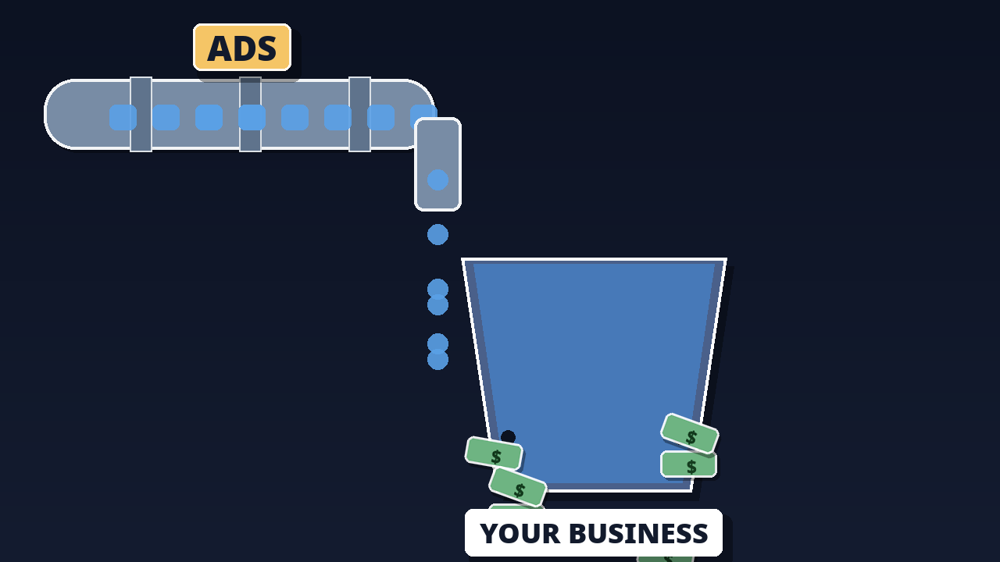
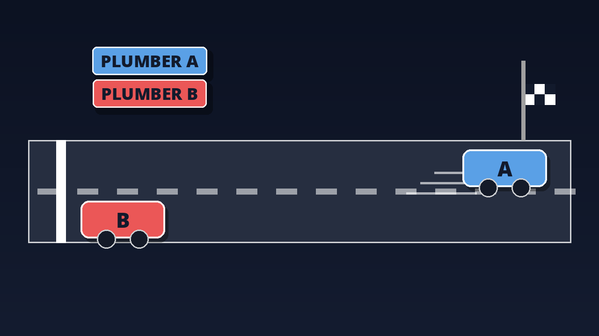
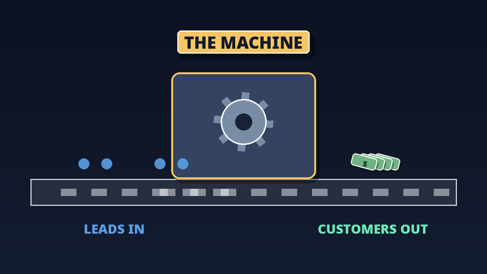
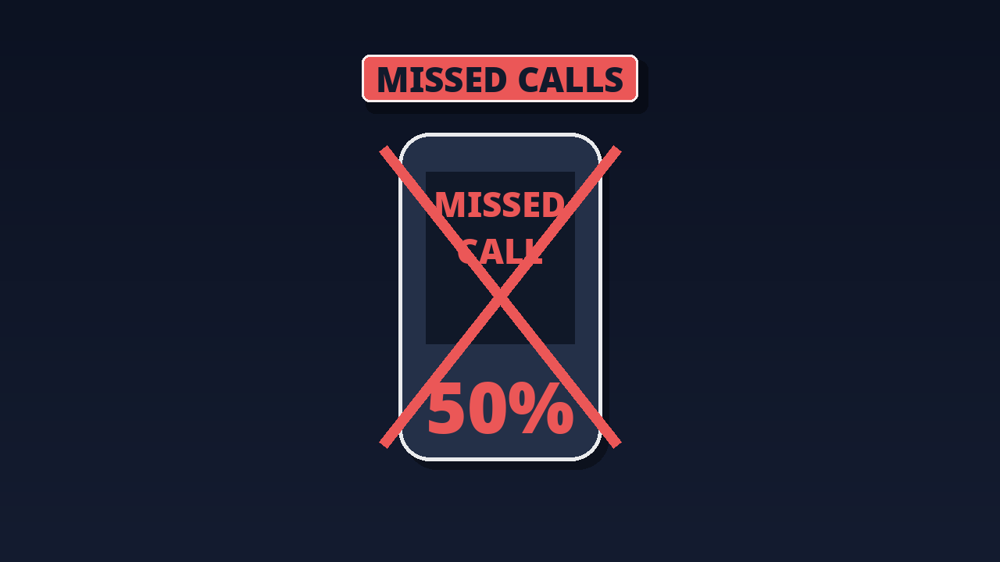
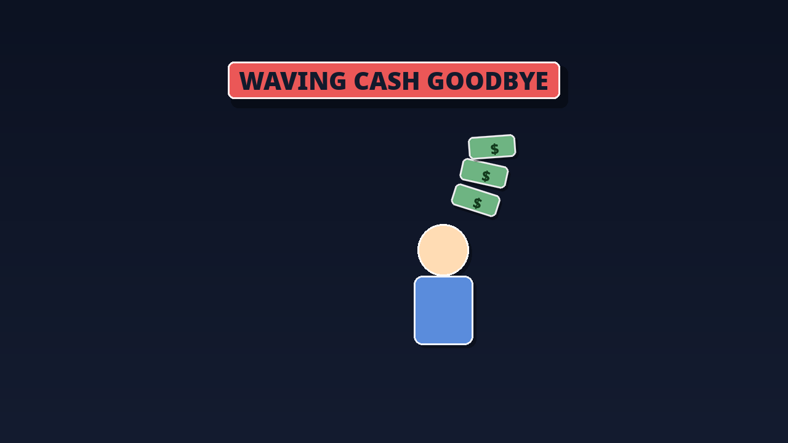
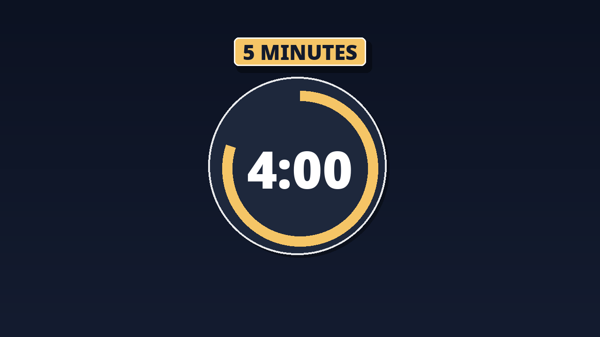
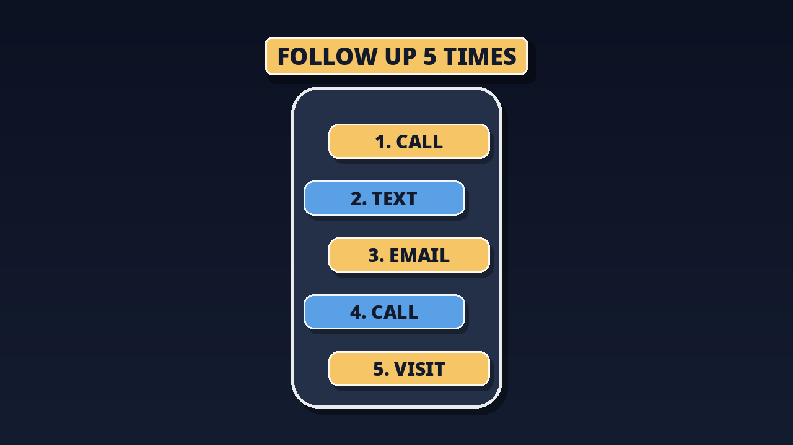
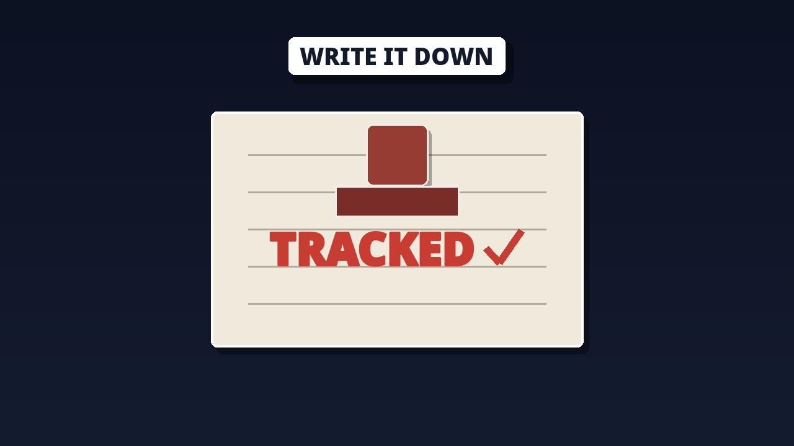
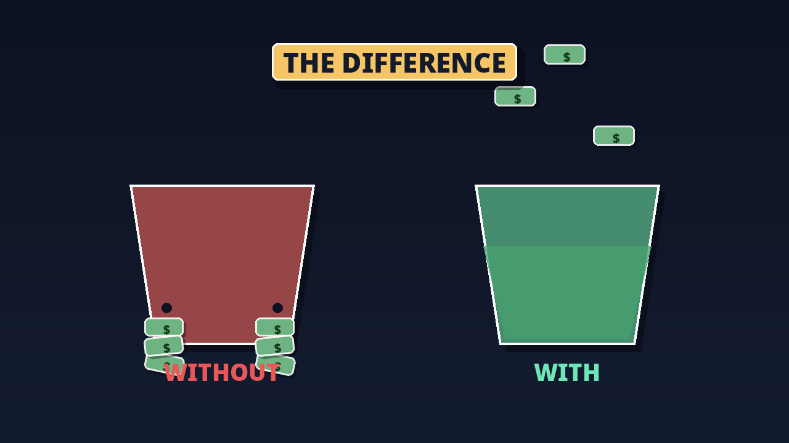
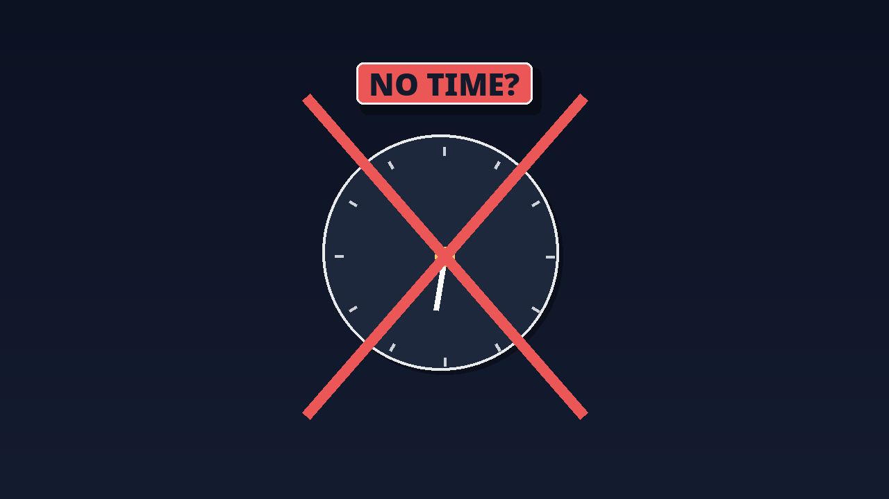

If you are an advertiser, if you are a business owner — this one is for you. You don't have a lead problem. You have a follow-up problem. And today I'm going to show you the machine that fixes it.
This article is the full written version. Read it once, slowly — and you will never look at your missed calls the same way again.
01Your business is a bucket
Think of your business like a bucket. Leads are the water — you pour water in. The holes? That's where leads leak out. Nobody picks up the phone. No callback. No follow-up.
You can pour more water — more ads, more leads — but if the bucket has holes, more water just means a bigger leak.

02The leak math
Let's do the math. Let's say you get 100 leads a month. Each lead costs you $20. So you spent $2,000.
Now watch the leak. You miss half the calls — that's 50 leads, gone. Of the 50 you talk to, you close 10.
So $2,000 ÷ 10 customers = $200 per customer. Half your money leaked out of the bucket before you even started.
Ad spend
Leads missed — gone
Cost per customer
03Speed wins — almost every time
It's not just THAT you follow up. It's HOW FAST. Two plumbing businesses. Same city. Same 20 leads. Watch this.
Plumber A calls back in 5 minutes — talks to 15 people, books 5 jobs. Plumber B calls back the next day — talks to 6 people, books 1 job.
Same leads. Same ad spend. Five jobs… versus one. Speed didn't cost a single dollar extra. But it made all the money.

04The Follow-Up Machine
So what is the Follow-Up Machine? Listen — it's not software. It's not some expensive tool. It's a SYSTEM. Four simple steps. And when you build it, every lead you already pay for… starts turning into customers.

05Step one — answer the phone
I know — sounds too simple. But most businesses miss 30, 40, even HALF their calls. You're on a job. You're driving. You're eating. The phone rings… and nobody picks up.
Every missed call is a lead you PAID for… dying in silence.

06The missed-call math
Let's say one lead costs you $20. You miss 10 calls this week. That's $200 — burned. Gone. Miss 10 calls every week? That's $800 a month. Thrown away.
Not on ads that failed. On customers who CALLED YOU… and heard nothing.

Burned this week
Thrown away per month
Spent on failed ads
07Step two — call back in 5 minutes
Not tonight. Not tomorrow. Five minutes. Set a rule in your business: every missed call gets a callback in 5 minutes. No excuses.
Why 5 minutes? Because after 5 minutes, they're calling your competitor. After an hour, they forgot you. After a day — you never existed.

08Step three — the 5-touch follow-up
Most businesses call once… and quit. That's why they lose. Here's the sequence:

09Step four — track it
Write it down. Every lead — where it came from, did you call, did they answer, what happened. Why? Because what gets measured… gets done.
If you don't track it, you'll THINK you're following up. But you're not. The paper doesn't lie.

10The proof — with vs without
Now let's put it all together. Remember our math? 100 leads, $2,000 spend, 10 customers — $200 per customer. That was WITHOUT the machine.
Now WITH the machine. You answer 90 calls instead of 50. Your follow-up closes 22 customers instead of 10. Same $2,000.

Without the machine
Leaking. Half the money gone before you start.
With the machine
Sealed. Same spend — cost per customer cut by more than half.
11"I don't have TIME for all this"
I know what you're thinking. "I'm on the tools all day." And that's EXACTLY why you need the machine. Because right now, you're paying for leads with your money… and then losing them with your busyness.
The machine doesn't need your time. It needs your DECISION. Once. Set it up… and it runs.

12Start ugly — phone + notebook
And listen — you don't need software on day one. Start with your phone and a notebook. Missed call? Call back in 5 minutes. No answer? Send the text. Write it in the notebook. Call tomorrow.
Simple. Ugly. It works. You can buy the fancy tools later — after the machine is already making you money.
13The machine, on one page
The Follow-Up Machine. Four steps. Tape this to your wall:
Find the hole.Fix the hole.Then grow. In this order.
Your ads are pouring the water. Now build the machine that keeps it. I'll see you in the next one.